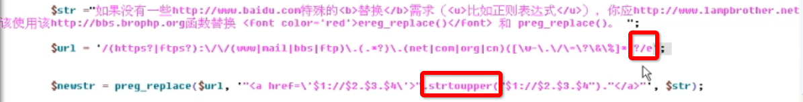

正则基本语法介绍：
语法：（与perl兼容）默认是贪婪模式
-
定界符：除字母，数字和反斜线“\”之外的任何字符均可，如/、|、{}、#等，常用：/
/正则内容/
-
原子：最小的一个匹配单位（放在定界符中），在一个正则表达式中，至少要有一个原子！
原子是正则表达式的最基本的组成单元，而且在每个模式中最少要包含一个原子。
原子是由所有那些未显示指定为元字符的打印（键盘输入的）和非打印字符(如回车未打印出来)组成，具体分为5类：
-
普通字符作为原子：如a~z、A~Z、0~9等，如：/3/、/a/
-
一些特殊字符和转义后元字符作为原子，语意特殊的符号需要转义(\)后才可作为原子，如：\”、\’、\*、\+、\?、\.等
-
一些非打印字符作为原子：
如：\f(换页符)、\n(换行符)、\r(回车符)、\t(制表符)、\v(垂直制表符)、
\cx(匹配由x指定的控制字符，如\cM匹配一个Control-M或回车符。x的值必须为A~Z或a~z之一)
-
使用“通用字符类型”作为原子：
如：
\d(任意一个数字，[0-9])、\D(任意一个非数字，如字母，空格等，[^0-9])
\w(任意一个字,a-z,A-Z,0-9,_，[a-zA-Z])、\W(任意一个非字，如@&*#()%@#，[^a-zA-Z])
\s(代表空白，空格，回车，制表符等，[\t\n\f\v])、\S(任意一个非空白，[^\t\n\f\v])
.：所有的原子
-
自定义原子表([])作为原子：[]：中括号表示里面的任意一个
如：
[abc]：a或b或c，一个字
[a-zA-Z]：a到z或A-Z的任意一个字符
^：除列表之外的：’/[apj]sp/‘、’/[^apj]sp/‘，必须放在开头
-
元字符：不能单独使用，修饰原子用来拓展原子的功能（对单个原子）
如：
*：可以出现0到*次。/go*gle/可以匹配：ggle，gooooogle等等{0,}
+：原子出现1到*次。至少出现一次。{1,}
?：出现0或1次{0,1}
{n}：出现n次，如：”/\d{5}/“：五个数字
{n,m}：出现n到m之间：如：”/\d{2,5}/“，2-5个数字
{n,}：出现n到*次。{0,m}：不支持{,m}
|：或的关系，表示其两边原子，只要有一个出现即可。但是|的优先级最低。如：”abc|123”：匹配abc或者123，而不是abc23或ab123
^或\A：必须以什么开始，符号必须在正则的前面（或在多行模式下行的开头，即紧随一个换行符之后）
$或\Z：必须以什么结尾，符号必须在正则的最后面（或在多行模式下行的结尾，即紧随一个换行符之前）
*abc$：以abc开头和abc结尾的
\b：匹配单词的边界。’/is\b/‘：匹配”this is”中的两个，’/\bis\b/‘：匹配”this is”中的第二个is
\B：匹配除单词边界以外的部分
-
( )：匹配其整体为一个原子，即模式单元。可以理解为由多个单个原子组成的大原子
改变优先级别
将小原子变大原子，如：”/(abc)*/“：出现0-*次abc
子模式，整个表达式是一个大的模式，小括号中是每个独立的子模式。在使用preg_match()数组结果里面会单独列出每个子模式的结果。
如：：”/(http\:\/\/)www\..*?\.(net|com)/“：http://是第一个子模式，(net|com)是第二个子模式。反向引用子模式(在括号前面加上(?:正则)，则取消了该模式的子模式引用)
如：”/\d{4}(-|\/)\d{2}\\1\d{2}/“，”2014/02/06 2014-02-06 2014/02-06”：能匹配第一二个时间，但是第三个匹配不了
其中\\1表示第一个子模式的查询结果，双引号中使用\\n，单引号中使用\n即可>
替换的时候，可以使用${n}来指定子模式。
-
模式修正符号：
对模式（正则）进行修正或扩充
在定界符外（对整个正则）
一个字符就是一个功能，可以组合使用
如：
i：忽略大小写，”/a{5}/i”：五个a
m(multiline)：修正正则可以视为多行，在使用 ^ 或 $ 符号时，每一行满足都可以（即每一行均视为一行处理）与grep类似
s：扩充正则中的 . 可以匹配换行了。当未指定s的时候， . 无法匹配换行符号。
U(ungreedy)：将正则改成非贪婪的模式，遇到满足条件的，即匹配了。
（.* ，.+），在后面加个问号：.*?的方式，也可以实现非贪婪，推荐使用。两个同时使用，会翻转！
x(extended)：忽略正则中的空白，如：”/web server/x“匹配”web server webserver”时，变成了”webserver”，此时，能够匹配”webserver”，但是无法匹配”web server”。
e：替换之后，对字符串进行执行。比如替换之后，需要对匹配的字符串进行大小写转换。
综上
正则的基本知识介绍完毕。下面介绍几个例子：匹配身份证：\d{15}|\d{18}
匹配：URL：$reg = '/(https?|ftps?):\/\/(www|mail|bbs|ftp)\.(.*?)\.(com|net|org|cn)(([\w.\/]*)\??([\w.\=\&]*))?/';
email邮箱正则：\w+([-+.]\w+)*@\w+([-.]\w+)*\.\w+([-.]\w+)*
注意：效率问题，尽量少用正则，尽量使用基本字符串函数。
PHP字符串函数介绍：
查找：
strstr：查找字符串首次出现，返回匹配字符串到结尾的字符串（区分大小写）
strpos：查找字符串首次出现，返回位置（返回首次匹配的子字符串的位置）
preg_match：正则匹配，只匹配第一个满足条件的
preg_match_all：正则匹配，匹配所有的满足条件的值（第四个参数控制了数组的格式）
preg_grep(reg,arr)：从数组(多个字符串)中匹配正则
分割：
substr：截取子字符串（参数是位置）
explode：
implode=join：
preg_split：用正则匹配分割
替换：
str_replace($from,$to,$str)：替换字符串，$from可以是数组，即多个替换成一个。此时，$to也可以是数组，即多对多映射。
strtoupper：将字符串替换成大写
preg_replace(from,to,str)：from是一个正则的字符串。to可以引用子模式\\1、\\2替换。
使用正则修正符（e）
如下图：将url找到之后，再进行替换，替换之后，再执行替换之后的结果。若有函数，则会被执行。
即将结果字符串进行运行处理。

支持对数组进行处理，即多对多的映射替换。一次性进行多个替换。(注意顺序)
其他正则函数：
preg_replace_callback($from,$call_back,$str)：从str中找到from匹配项，然后将匹配项作为参数传递给call_back函数，每一个子模式都会作为一个参数，第一个子模式，作为第一个参数。依次类推。
preg_filter：
preg_quote：转义正则表达式，即将正则中需要转义的字符，自动转义。
此处列出一点glob匹配的语法，与之比较：
glob通配符：
*：任意多个任意字符匹配
?：仅与一个任意字符匹配
[…]：同方括号中的任意一个字符相匹配。这些字符可以用字符范围(比如 1-9)或者离散值或同时使用两者表示。例如：[a-zBE5-7] 同所有 a 到 z 之间的字符和 B、E、5、6、7 相匹配。
：与所有不在方括号中的某个字符匹配。例如 [!a-z] 同某个非小写字母相匹配[5]；
{c1,c2}：同c1或者c2相匹配。其中c1和c2也是通配符。因此，您可以使用{[0-9]*,[acr]}。如：*[!a-z]：当前目录中不以小写字符结尾的全部文件。